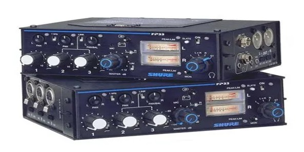
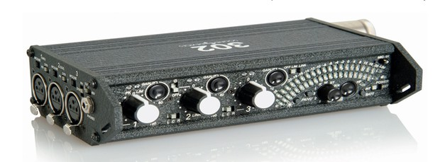
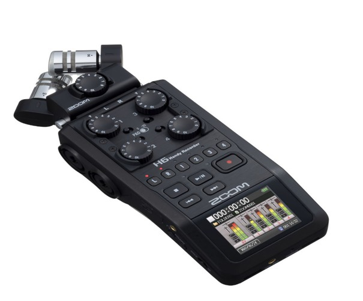

חשיבות הנושא
המצלמה כמכשיר הקלטה יכולה להקליט שני ערוצי קול. תפקידו של המערבל הוא לחבר מספר רב של מיקרופונים, לשלוט בעוצמת הקול ולנתב את הקול לערוצים שונים במצלמה. המערבל מאפשר גם עבודה מקצועית של איש הקול, כי הוא נמצא ברשותו בנפרד מהמצלמה ומאפשר התרכזות בלעדית בסאונד.
תת-נושאים ומטרות אופרטיביות
תת-הנושאים:
- ו.1 מערבלי קול אנלוגיים.
- ו.2 מערבלי קול דיגיטליים.
מטרות אופרטיביות:
- התלמיד יכיר את תפקידו של מערבל הקול במערך הקלטת הקול בהפקת סרט.
- התלמיד יכיר את המבנה הבסיסי של המערבל, כולל כניסות ויציאות של המכשיר מהמצלמה ואליה, כפתורי השליטה בקול והפונקציות השונות של המכשיר.
- התלמיד יתרגל את חיבור המערבל למצלמה באמצעות הכבלים הייעודיים.
- התלמיד ידע לכייל את האות שיוצא מהמערבל 1 khz טון עם מחווני הקול במצלמה.
- התלמיד ידע לתפעל מערבל קול בחיבור לשני מקורות קול שונים וישלוט ביכולות המגוונות של המכשיר.
ו.1 מערבלי קול אנלוגיים
בהפקות לקולנוע יש צורך במספר רב של מיקרופונים על הסט, ואיש הקול צריך לשלוט בעוצמת הקול של כל אחד מהמיקרופונים ולנתב אותם לערוצי קול במצלמה (כאשר המצלמה היא מכשיר ההקלטה). לצורך כך יש להשתמש במערבל קול נייד או נייח, תלוי בסוג ההפקה או ההקלטה.
רוב סוגי המערבלים האנלוגיים של החברות השונות דומים זה לזה למעט שינויים בעיצוב המכשיר. המערבל הנייד מאפשר כניסה של שמונה מיקרופונים ויציאה למצלמה לשני ערוצי קול ch-1, ch-2.
ניתן לנווט את ערוצי הקול הנכנסים לכל אחד מהערוצים במצלמה על ידי כפתור הפן או לנווט להקלטה בשני הערוצים בו זמנית.
חיבור המערבל למצלמה מצריך כבל צמה הבנוי משני כבלים של XLR וכבל חוזר MINI PL לשמיעת קול חוזר למערבל. החיבור בין המצלמה למערבל יהיה: ביציאת המערבל במצב של LINE. בכניסה למצלמה במצב של LINE.
יש לשלוח סיגנל של 1 קילו הרץ (טון) שיוצא מהמערבל ולכוון במצלמה במצב ידני ל-20db. כאשר המערבל מחובר למצלמה ניתן לשלוט על גובה הקול המוקלט במצלמה בעזרת מחווני הקול במערבל.
תרגול הפעלה של מערבל קול:
- לעשות את החיבורים ולהכיר את תצוגת עוצמת הקול המופיעה על מד הקול. סקלות VU לעומת סקלה דיגיטלית Dbfs.
- שינוי עוצמת הקול של מקורות הקול השונים בנפרד.
- שימוש בפונקציית Audio Return לבקרה על ההקלטה במצלמה.
- בדיקה וכיול מיקסר למצלמה באמצעות אות טון הנשלח מהמיקסר למצלמה.
- ביצוע איזון קול Balance בין שני מקורות.
- שמירה על עוצמת קול נורמלית, בשליטה ידנית, במשך ההקלטה.
להקלטות שטח נשתמש במערבל נייד. בהמשך, בהקלטות אולפן, נשתמש במערבל נייח עם מספר רב של כניסות ואפקטים.
Tutorial - How to configure a field mixer (וידאו):
play_circle_filledTutorial - How to configure a field mixer
לחץ לצפייה בסרטון ביוטיובו.2 מערבלי קול דיגיטליים
במערבלי קול דיגיטליים ניתן להקליט על כרטיס זיכרון את הסאונד הנכנס למערבל הקול ויוצא למצלמה. הקלטה זו היא הקלטה חיצונית של קול בנפרד בהפרדת ערוצים.
מצלמות DSLR נכנסות יותר ויותר לשימוש בהפקות סרטים. מאחר שהן לא יכולות להקליט קול באיכות טובה ובמספר רב של ערוצי קול נדרשת הקלטה חיצונית על גבי כרטיס במקביל ובתיאום עם הצילום. יש מכשירים שיודעים להסתנכרן על ידי טיימקוד בזמן הצילום.
במקרה שאין סנכרון טיימקוד, יוכרז בתחילת הצילום מספר הסצנה ותבוצע מחיאת כף (קלאפ) שתצולם במצלמה ותוקלט בסאונד הפנימי שלה ועל כרטיס הקול כדי לאפשר לעורך לסנכרן את הקול עם התמונה. אפשר לבצע את הקלאפ גם בסוף השוט, לפני שהמצלמה עצרה. במקרה כזה יש להכריז Clap End.
במכשירים דיגיטליים איש הקול:
- יכיר את תפריט מכשיר ההקלטה.
- יכיר את הכניסות והיציאות למערבל הקול ואת פורמט ההקלטה.
- יכייל את הטיימקוד במקביל למצלמה t.c in t.c. out.
- יפרמט את הכרטיס לפני ההקלטה.
- יקליט בערוצים נפרדים בהתאם לכניסות המכשיר.
Zoom F8 MultiTrack Field Recorder - Review (וידאו):
play_circle_filledZoom F8 MultiTrack Field Recorder - Review
לחץ לצפייה בסרטון ביוטיוב
עבודה מעשית:
- התלמידים יתרגלו כל אחד בנפרד עבודה מעשית כולל חיבור המערבל למצלמה והקלטה בהתאם להנחיות שלמדו ויקפידו על איכות הקול בזמן ההקלטה.
- התלמידים יחברו מספר רב של מיקרופונים וישלטו על עוצמת ההקלטה.
- התלמידים יקליטו דיאלוגים בשטח במהלך התרגיל כולל הקלטת פוליז ויקפידו לבדוק את ההקלטה לפני שיעזבו את המקום.